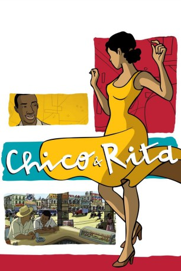

#1760 Chico & Rita
Auszeichnungen: für 1 Oscars nominiert
 
 IMDB-Wertung: 7.2 / 10
IMDB-Wertung: 7.2 / 10  Metascore: 76
Metascore: 76 
Kuba, 1948: Chico ist ein junger Pianist mit großen Ambitionen. Rita ist eine hübsche Sängerin mit einer herausragenden Stimme. Die Musik und die Romantik vereinigt sie, aber ihre Reise in der Tradition des Bolero bringt ihnen nur Schmerz. Von Havanna über New York, Paris, Hollywood bis nach Las Vegas kämpfen zwei leidenschaftliche Wesen um in Musik und Liebe vereint zu sein!
Jahr: 2010
Dauer: 94 Minuten
FSK: 0
Land: Spanien Studio: KOOL FilmdistributionTonspuren:
Untertitel:
Auflösung: 1080p (1920x1040) Größe: 6000 MB
Genre: Musik, Animation/Trick, Liebe
Regisseur: Tono Errando, Javier Mariscal, Fernando Trueba
Drehbuch: Ignacio Martínez de Pisón, Fernando Trueba
Soundtrack: Bebo Valdés
Darsteller:
- Ken Forman als
- Steve Harper als
- Lenny Mandel als Ron
 Peter Appel als
Peter Appel als - Isabelle Stoffel als
- Limara Meneses als Rita
- Eman Xor Oña als Chico
- Mario Guerra als Ramón
- Jon Adams als
- Renny Arozarena als
- Blanca Rosa Blanco als
- Jackie de la Nuez als
- Rigoberto Ferrera als
- Ray Gillon als
- Jorge Ryan als
- Claudia Valdés als
- Ashley Albert als
- Tracey Ayer als
- Carlos Cabal als
- Wendy Dillon als
- Kathy Fitzgerald als
- Luis Alberto García als
- Mark Anthony Henry als
- Kerin McCue als
- Miriam Socarras als
 Jay Benedict als
Jay Benedict als - Luis Enrique Carreres als
- Aleida Enríquez als
- Carlos Ever Fonseca als
- Eddy Calderón als
- Alexis González als
- David Kramer als
- Estrella Morente als
- Diana Preisler als
- Gladys Zurbano als
Datei: X:\HD-Trick\Chico & Rita (2010, FSKo.Al., 1920x1040).mkv seit 17.08.2015
Festplatte: Kinder-Filme+Trick
 Es gibt insgesamt 28 Filme in der Gruppe 'HD-Trick'
Es gibt insgesamt 28 Filme in der Gruppe 'HD-Trick'